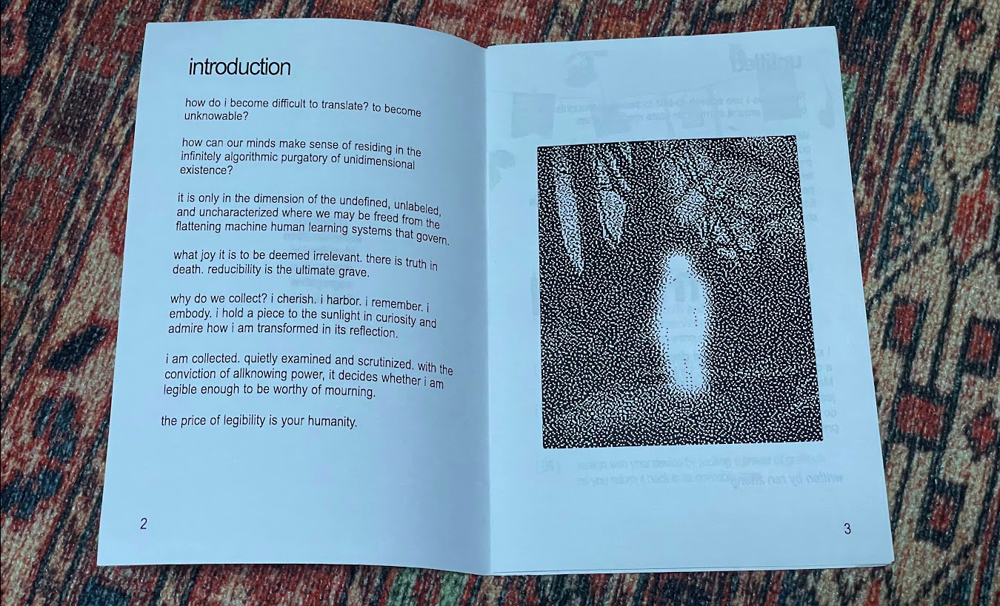

For the Illegible is a participatory collection of poetry and design fictions that meditate on dataveillance technologies and playful ways to resist. This zine includes anonymized poetic works from 2 participants as well as incorporates musings and reflections from other participants. The absurdist design fictions imagine playful ways that we can reclaim agency and control over dataveillance technologies. The goal of the zine is to artfully communicate how these technologies harm communities and how we might imagine ideas of resistance.